Pokédex / #168
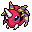
Ariados #168
BugPoison
A single strand of a special string is endlessly spun out of its rear. The string leads back to its nest.
Generation 2 · Johto
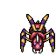
Stats
| Attack | 90 | |
|---|---|---|
| Defense | 70 | |
| Sp. Atk | 60 | |
| Sp. Def | 70 |
In the wild
| Wild level | 30–40 |
|---|---|
| HP | 70 |
| Experience | 10 |
| Egg groups | Bug |
Evolution
- Evolves from Spinarak at level 22.
Moves
| Level | Move | Type | Category | Power | Energy | Cooldown | Effect | |
|---|---|---|---|---|---|---|---|---|
| 1 | Tackle | Normal | Physical | 15 | 15 | 1s | Tackle is one of the most common and basic moves a Pokemon learns. It deals damage with no additional effects. | |
| 1 | Swords Dance | Normal | Status | – | 100 | 60s | Swords Dance raises the user's Attack by two stages. | |
| 1 | 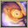 | Focus Energy | Normal | Status | – | 70 | 60s | Increases Critical-Hit ratio by 50%. |
| 1 | Venom Drench | Poison | Status | – | 50 | 30s | Opposing Pokemon are drenched in an odd poisonous liquid. This lowers the Attack, Sp. Atk, and Speed stats of a poisoned target. | |
| 1 | 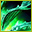 | Fell Stinger | Fighting | Physical | 50 | 60 | 10s | When the user knocks out a target with this move, the user's Attack stat rises drastically. |
| 1 | Bug Bite | Bug | Physical | 60 | 60 | 9s | Bug Bite deals damage and has no secondary effect. | |
| 1 | 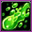 | Poison Sting | Poison | Physical | 15 | 20 | 5s | Poison Sting inflicts damage and has a 30% chance of poisoning the target. |
| 1 | 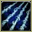 | String Shot | Normal | Status | 1 | 15 | 8s | String Shot lowers the target's Speed by one stage. |
| 1 | 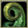 | Constrict | Normal | Physical | 10 | 50 | 15s | Constrict deals damage and has a 10% chance of lowering the target's Speed by one stage. |
| 1 | Absorb | Grass | Special | 20 | 35 | 5s | Absorb deals damage and the user will recover 50% of the HP drained. | |
| 12 | 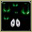 | Scary Face | Normal | Status | 1 | 40 | 15s | Scary Face lowers the target's Speed by two stages. |
| 15 | Night Shade | Ghost | Special | 80 | 80 | 12s | Night Shade deals damage and has no secondary effect. | |
| 19 | 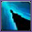 | Shadow Sneak | Ghost | Physical | 40 | 40 | 11s | Shadow Sneak deals damage and has no secondary effect. |
| 23 | 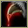 | Fury Swipes | Normal | Physical | 18 | 45 | 9s | Fury Swipes inflicts damage, hitting 2-5 times per use. |
| 28 | 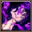 | Sucker Punch | Dark | Physical | 80 | 80 | 12s | Sucker Punch deals damage and has no secondary effect. |
| 32 | 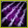 | Spider Web | Bug | Status | – | 60 | 20s | Spider Web paralyzes the target. |
| 37 | Agility | Normal | Status | – | 80 | 20s | Agility raises the user's Speed by two stages. | |
| 41 | 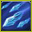 | Pin Missile | Bug | Physical | 25 | 60 | 9s | Pin Missile inflicts damage, hitting the target between 2-5 times per use. |
| 46 | 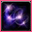 | Psychic | Psychic | Special | 90 | 100 | 21s | Psychic deals damage and has a 10% chance of lowering the target's Special Defense by one stage. |
| 50 | 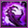 | Poison Jab | Poison | Physical | 80 | 80 | 12s | Poison Jab inflicts damage and has a 30% chance of poisoning the target. |
| 55 | 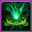 | Cross Poison | Poison | Physical | 70 | 70 | 15s | Cross Poison deals damage and has a 10% chance of poisoning the target. It also has an increased critical hit ratio. |
Field abilities
DigFindFlash
Special abilities
SwarmInsomnia
Egg moves
Baton PassDisableElectrowebMegahornNight SlashPsybeam PursuitRage PowderSignal BeamSonic BoomToxic SpikesTwineedle
Technical machines
BideDouble EdgeDouble TeamGiga DrainHyper BeamMimicPoison JabPsychicRageRestSludge BombSolar BeamSubstituteSwiftToxic
Drops
| Item | Amount | Chance | |
|---|---|---|---|
| bottle of poison | 1–6 | 89.3% | |
| venom pendant | 1 | 35.7% | |
| spider fangs | 1 | 35.7% | |
| acorn | 1 | 23.8% | |
| poisonous slime | 1 | 23.8% | |
| spider silk | 1 | 17.9% | |
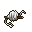 | spiderwebs | 1 | 7.14% |
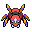 | ariados doll | 1 | 0.1% |
| Insect Plate | 1 | 0.025% | |
| Toxic Plate | 1 | 0.025% | |
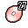 | TM 27 | 1 | 0.01% |
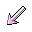 | held poison barb | 1 | 0.01% |
| held silver powder | 1 | 0.01% |